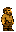
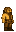
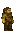
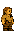
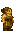
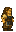

Dwarf
Generated: 2026-07-15
Character speciespage.
| Field | Value |
|---|---|
| ID | dwarf |
| Page type | Character species |
| Status | live |
| Description | Sturdy mountain folk. Slower movement, but master miners. |
| Abilities | none |
| Weaknesses | none |
| Lifespan | standard |
| Visual families | Default: 1 canonical image + 2 variants; Female: 1 canonical image + 2 variants |
Summary
Dwarf is a live playable species definition from data/character_data.json.
Body Art
Default body (dwarf)



| Asset id | Role | File |
|---|---|---|
dwarf | Canonical image | ../../../../art/generated/players/dwarf.png |
dwarf_01 | Variant 1 | ../../../../art/generated/players/dwarf_01.png |
dwarf_02 | Variant 2 | ../../../../art/generated/players/dwarf_02.png |
Female body (dwarf_female)



| Asset id | Role | File |
|---|---|---|
dwarf_female | Canonical image | ../../../../art/generated/players/dwarf_female.png |
dwarf_female_01 | Variant 1 | ../../../../art/generated/players/dwarf_female_01.png |
dwarf_female_02 | Variant 2 | ../../../../art/generated/players/dwarf_female_02.png |